Introduction
In this quick guide, I will show you how to easily replace a battery for a laptop. In particular, I have an old Dell Inspiron laptop which I bought back in 2017 when going to college. After so many years of heavy use, the battery life became severely degraded—draining quickly and lasting only about 30 minutes. Even though there were no signs of battery swelling or physical damage, giving it a brand new battery gives the machine a second life.
Bottom chassis showing model information and rear screws.
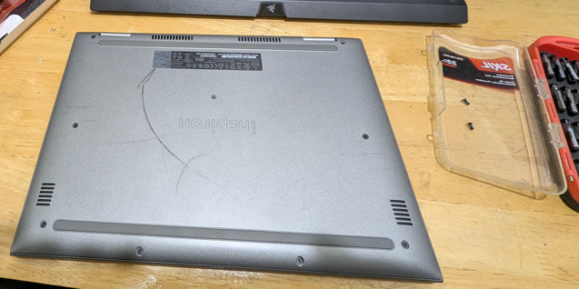
The laptop interface prior to replacing the degraded battery.
Parts & Tools Needed
Finding the Correct Replacement Battery
There are two main methods to identify the exact battery unit required for your laptop:
Method 1: Service Tag / Serial Number
Check the bottom label of the laptop for the Service Tag or Serial Number (S/N). Enter this code into the manufacturer's support site (e.g., dell.com/support). Note: For older models, exact parts might no longer be listed.
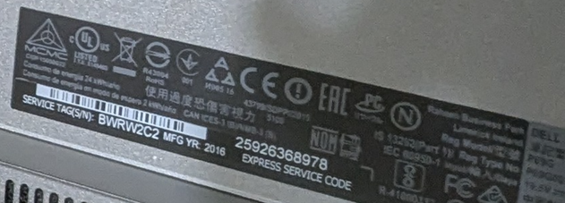
Method 2: Direct Disassembly (Recommended)
Open the laptop chassis directly to inspect the factory battery label. For this model, the specs are: 42 Wh Li-ion Battery — Type: "WDX0R" 11.4V. You can search this model string on Amazon or eBay.
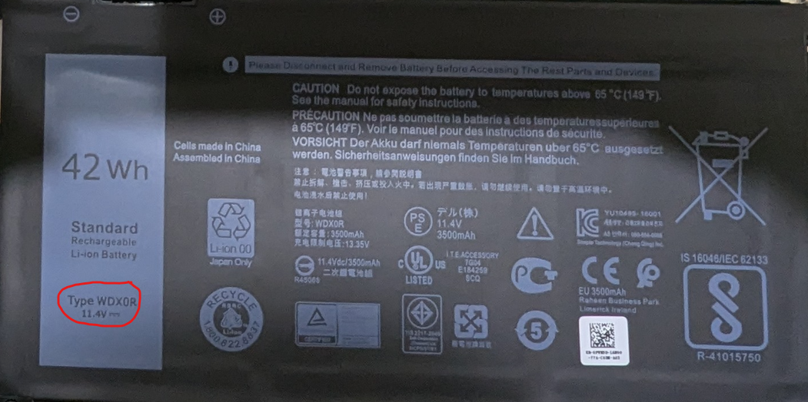
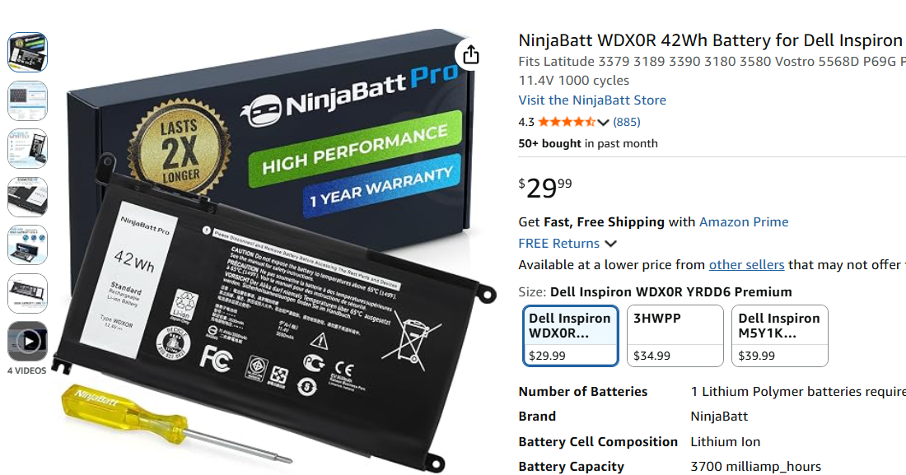
Required Tools
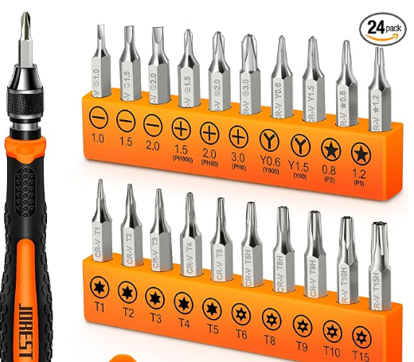
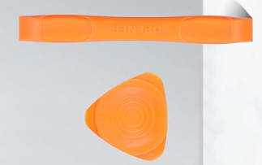
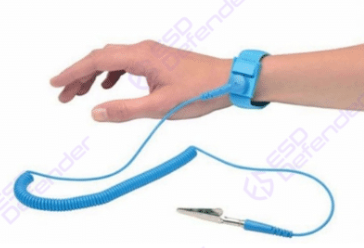
Disassembly & Installation
Click checkboxes to track your progress
Before touching any internal electronics, strap on your anti-static wristband tightly against your bare skin. Proper direct skin contact is critical to ground static charges and protect components against ESD damage.
Turn the laptop upside down. Select the matching screwdriver bit for the chassis screws around the outer edges. Gently unscrew each bolt and place them on your workspace sorted by their original positions, as screw lengths may vary.
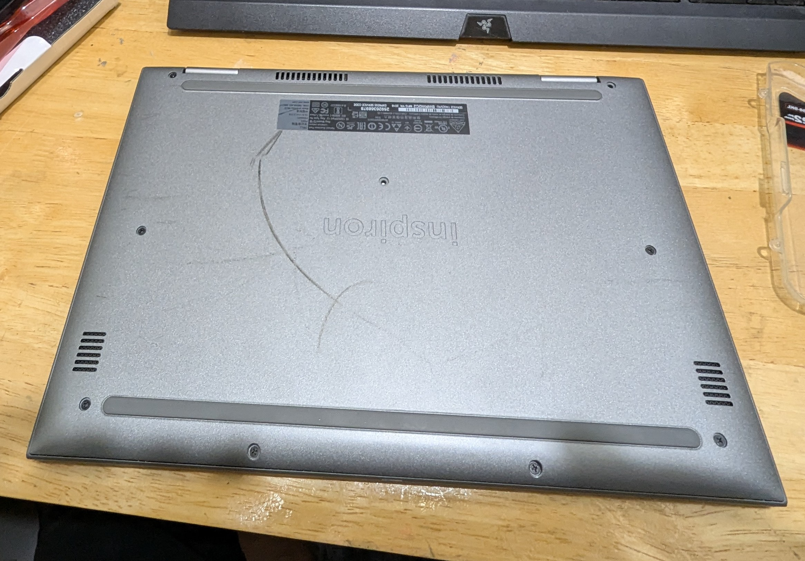
Insert a plastic spudger (or an old bank card) into the small gap around the laptop edge. Carefully slide it along the seam to pop the clips free. Once open, locate the 4 mounting screws holding the battery unit in place and remove them.
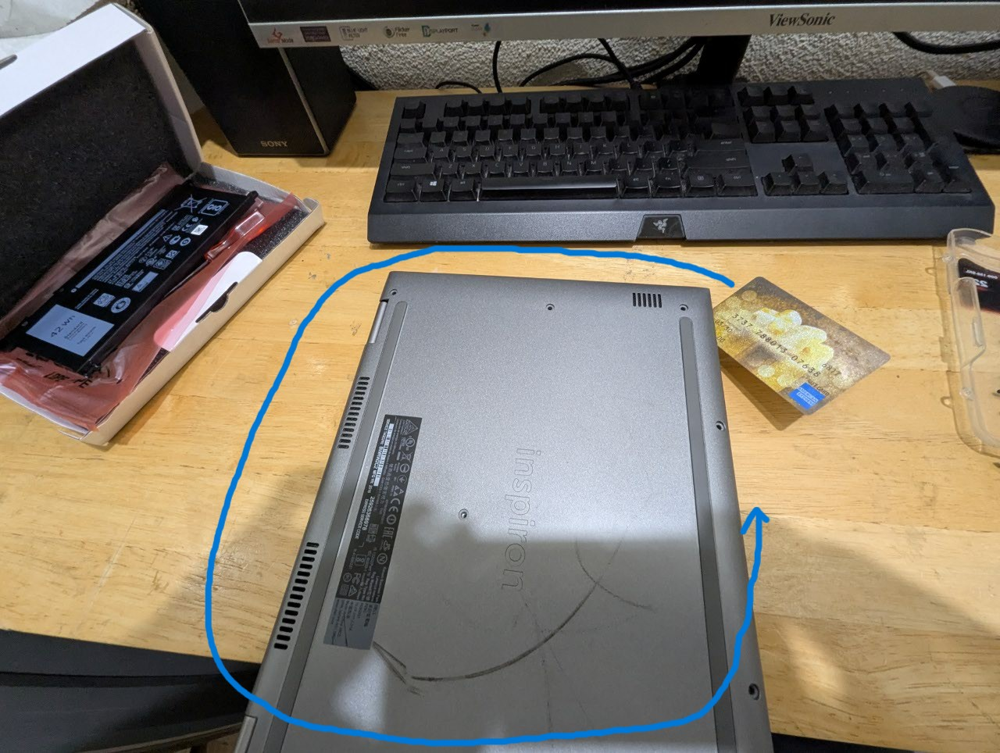
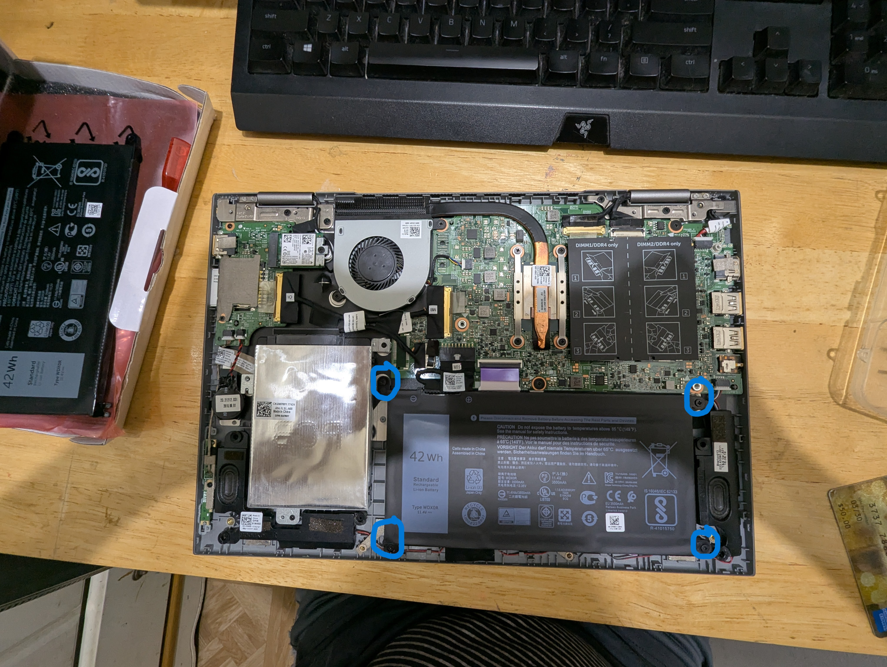
Gently disconnect the power cable harness from the motherboard, ensuring you do not pull hard on the wires. Lift out the original battery and compare it against the new unit to ensure voltage and form-factor match.
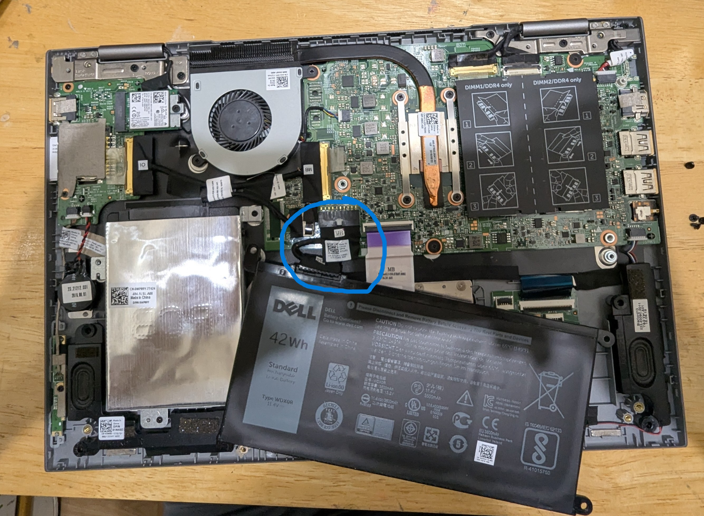
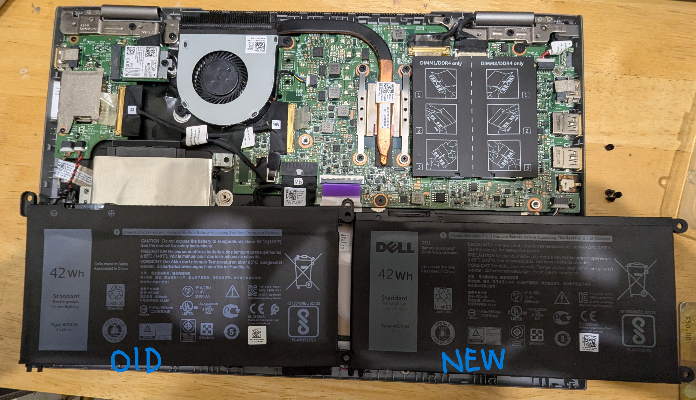
Set the new battery in place, firmly attach the cable harness to the motherboard connector, re-insert the 4 battery screws, snap the back cover back onto the laptop frame, and re-tighten the bottom screws.
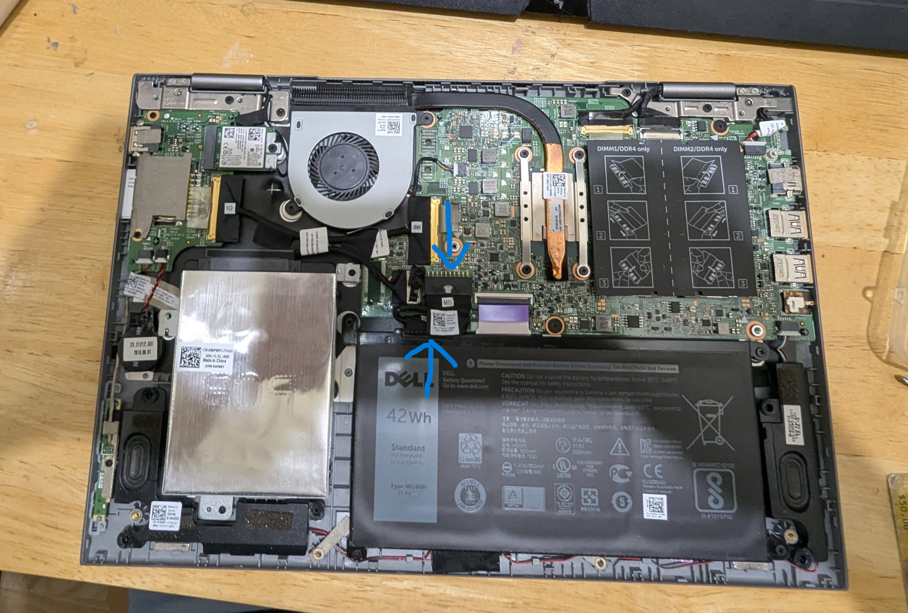
Test & Verify Operation
Press the power button. If the laptop does not turn on immediately, don't worry—new replacement batteries frequently ship uncharged. Plug in your AC adapter to charge it briefly before powering on.
🎉 Replacement Complete! Enjoy your restored battery performance.